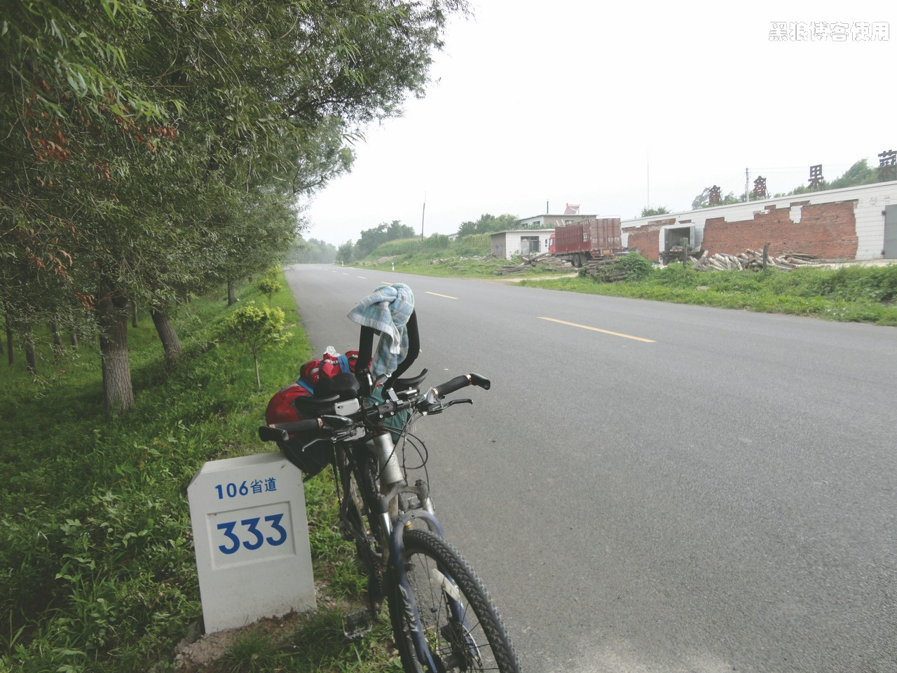

骑行长春（第五天，直达法库，精疲力尽）
黑狼语录：
- 当我只想着屁股的时候，顾不上别的了
今天 8:00 出发，屁股非常的疼，手也很疼。幸好在宾馆巧遇了一个哥们，从朝阳到沈阳（下页有照片），正好可以同行到新民市，大约 70-80 公里。
8:00 还没出发，我的骑行眼镜居然断了，不用还不行，没办法，把镜片拆下来，用胶带粘在夜行眼镜上，效果还不错。
9:40 我的前胎又没气了，把赶紧把备胎换上，耽误了 30 分钟（主要是我捆包的时间）。刚骑上，忽然想起外胎上的刺没有清理，赶紧下车，扒胎、找刺、装上，又用了 10 分钟。两个人就是速度快，继续前行。
一路杀到新民，除了换一次胎外，基本没怎么休息。
中午 12:30 多到了新民，一起吃了个饭，先来一盘大西瓜，爽！朝阳的哥们非要尽地主之宜。饭后，共同骑行了 1 公里后分手，他去沈阳，我去法库。
一个人骑，不如两个人快。 14:30 左右，骑行了 92 公里。
摔了一跤，幸亏我身手敏捷，顺势来个滚翻，皮都没擦破，1 分钟后，继续前进。
从新民到法库的路不太好走，有 20 公里左右的砂石路（期间还有修路的地方），速度比较慢。
17:00 跑了 127 公里到了 106 省道的 333 公里处，这段路走的很是辛苦。
18:33 到达了离法库 2.3 公里处，今天的腿明显的用不上力量，屁股也不敢用力。
18:50 在法库县内慢慢溜达着，正在找宾馆，今天骑行了 158 公里。
今天状态不佳，把主要的精力都放在了如何减少屁股、手的使用上了，没顾得上照相什么的。总之一句话：精疲力尽。